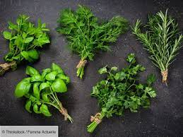

ASSAISONEMENT
>
Le sel et le poivre: Ils sont utilisés dans pratiquement toute les recettes donc a toujours avoir sous la main!
Les herbes aromatiques :elle parfumeront vos créations tout en servant à prévenir et à soigner différentes maladies.

Epices: elles servent a pimenter le gout de vos préparations et sont souvent utilisés
dans les pizzas,les quiches ou encore les cakes.